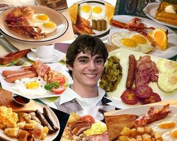

Breaking Bad
 De: La Frikipedia, la enciclopedia extremadamente seria.
De: La Frikipedia, la enciclopedia extremadamente seria.
De la serie Programas de TV:
Walter White y su perilla de malote no te aprueban,
IP anónima.
| Idioma original:
|
Inglés y Español Mexicano.
|
| Creador:
|
Vince Gilligan.
|
| Duración:
|
Eterna en nuestros corazones.
|
| No. Episodios:
|
62.
|
| No. Temporadas:
|
5.
|
| ¿Aún se transmite?:
|
Ya no.
|
| Género:
|
Masterpiece.
|
| Nivel de frikismo:
|
Su nivel de frikismo es muy aleatorio.
|
| Películas:
|
Pronto.
|
Si usted lee este artículo sin haber visto la serie o sin tener sentido del humor es posible que contraiga cáncer de pulmón. Inoperable.

IP anónima viendo la serie.
«Fumar marihuana, comer cheetos y masturbarse no constituyen planes en mi agenda.»
~ Walter White incitando a IP anónima a la vida sana.
«Yeah Science, Bitch!»
~ Jesse viendo El Hormiguero.
«-Knock, knock.
-Who’s there?
-I am the one who knocks.»
~ Whalter White jodiendo todos los chistes de Knock Knock.
«¡Aléjate de mí territorio!»
~ Whalter White ahuyentando a un perro que estaba meando en el buzón de su casa.
«Me follé a Ted.»
~ Skyler siendo Skyler.
«Habrémos terminado cuando yo diga que hemos terminado.»
~ Walter White cuando le hacen Jaque Mate.
«Jesse, tenemos que cocinar.»
~ Mr. White incordiando a Jesse a las cuatro de la mañana porque tiene hambre.
«Eres el tipo más listo que he conocido, pero eres tan estúpido para no ver que él tomó su decisión hace diez minutos.»
~ Hank asegurándole a su cuñado que el cliente ya ha decidido que cerveza va a comprar.
Hank Schrader desesperado por encontrar a Heisenberg.
«¡Ahhhhhhhhhhhhhhhhhhhhhhhhhhhhhhhhhhhhhhhhhhhhhhhhhhhhhhhhhhhhhhhh!»
~ Walter después de que algo le rozase la pierna cuando estaba tumbado debajo de su casa.
«Muy bien, yo tengo el cojín y me toca hablar.»
~ Skyler demostrando una vez más que está loca.
«¡Pues ríndete y muere!»
~ Walter Jr. ayudando a su padre, atrapado en un bug en el Counter.
«¿Qué es lo que hace un hombre Walter? Un hombre provee a su familia.»
~ Gus enseñando a ser un macho.
«Conozco a un hombre que conoce a un hombre que conoce a un hombre… que conoce a un hombre.»
~ Saul dando rodeos para que nadie sepa que está hablando de su micropene.
Breaking Bad traducido al espiñol como "Volviéndome malote" y con el título alternativo de "El Show de los Calvos", es una serie de televisión norteamericana que se empezó a emitir allá por el lejano 2008.
Orígen
La idea principal de la serie se basa en hechos reales. El creador, Vince Gilligan y su mejor amigo se hallaban en problemas económicos drásticos. Ni siquiera tenían una casa de lo mal que les iba y dormían en la vieja caravana del tío de Vince.
Después de unos hurtos menores y varias violaciones se les ocurrió la idea de ir por todo el mundo cocinando metanfetamina en su coche-hogar. Dicho y hecho, se pusieron a fabricar esta substancia sin tener ni puñetera idea, guiándose por un hilo de Forocoches que explicaba como hacerlo. Con su primer lote ya en sus manos estaban listos para venderlo, también según los pasos indicados en Forocoches.
Encontraron una pequeña banda interesada en el producto que, al probarlo (y quedar más que descontentos con la mierda de calidad), decidieron matarlos a los dos. Justo en el momento del tiroteo Vince recibió una llamada y comenzó a sonar su teléfono móvil. El politono era la banda sonora de El bueno, el feo y el malo lo que provocó que su entrañable amigo comentase: "Jeje, ¿te imaginas que nuestras aventuras fuesen una película?" Ese ridículo comentario hizo que se descojonaran sus descontentos compradores, por lo que decidieron perdonarles la vida. Lamentablemente uno de ellos ya había disparado y la bala había impactado en el bajovientre del chistoso salvador, que se desangraba hasta la muerte intentando contener sus tripas dentro de su cuerpo.
Esta traumática vivencia le sirvió de inspiración a Vince para crear una serie y dedicarsela a la muerte de su amigo.
Argumento
-Breaking Bad. Es una serie que trata… ¿de qué? ¿Nadie?
-De una niña latina de 7 años que, junto con un mono morado, emprende la búsqueda de un objeto perdido, el cual finalmente encuentra gracias a la inestimable ayuda del público.
-No. Técnicamente hablando, Breaking Bad trata la vida de un químico sobrecualificado para ejercer la enseñanza que, cuando contrae cáncer, decide introducirse en el negocio de la metanfetamina con el fin de destinar las ganancias a su tratamiento de quimioterapia y a garantizar el sustento económico de su familia una vez el muera.
Pero yo prefiero verla como un estudio de los cambios. Piensen en esto:
Un genio, honrado, con problemas de salud y de dinero, que comienza a tomar sus propias decisiones. Que comienza a hacer droga. Que comienza a matar gente. Que crea un imperio. Un mito. Una leyenda. Heisenberg.
Precuela

La familia estaba atemorizada minutos antes de que sucediese la tragedia.
La serie en realidad es un spin-off de la famosísima Malcolm el de enmedio. Esta serie no se llamaba así porque Malcolm fuese el que nació en medio ya que son cuatro hermanos y no se puede ser el de en medio si no se es un número impar. Esto lo sabe hasta el que inventó el chiste de van dos en una moto y se cae el de en medio.
Entonces, ¿por qué se llamaba así? Como todos sabemos, Lois es una loca del coñi, menopausica e hiperestresada que odia a Hal, mientras que este es un calzonazos que la tiene que soportar como un santo, mientras lee o realiza cualquier invento para poder ignorarla. He aquí el significado del título. Malcolm es el único hijo deseado de los cuatro, el único que mantiene unida la familia. Al final de esta serie Resse y Dewey se encontraban en la filarmónica de Praga dando un concierto, por lo que Malcolm y sus padres están solos en casa, cuando unos ladrones entran. Al encontrárselos allí los atan y comienzan a robarles todo los objetos de valor de la casa. Es entonces cuando Malcolm empieza a hablar con la cámara (como es habitual en la serie) lo que mosquea a los ladrones y le pegan un tiro en la sien. Esto supone la muerte de Malcolm y del matrimonio de sus padres ya que, después de liberarse, llamar a la policía y un entierro se divorcian.
Hal, por fin libre, sigue con su doctorado en química (ahora con más intensidad). Decide hacer una investigación sobre la composición del cuerpo humano, la cual la hace con una joven muchachuela a la que viola sin querer debido a tantos años de abstinencia.
Horrorizado con ese fatal desliz decide abandonar la organización con la que estaba desarrollando la investigación, cediéndoles la autoría y, por precaución, se cambia de nombre pasando a ser Walter White.
Tiempo después conoce a Skyler y se enamora de ella debido a su comportamiento agresivo y completamente esquizofrénico (el cual le recuerda a su antigua esposa). De esto podemos deducir que Walter es masoca.
Cuando se entera que su antiguos compañeros desestimaron la relevancia de su antigua investigación y que nunca fue publicada decide recuperarla y, con ella gana el Premio Nobel de química, lo que , evidentemente, deja molestos a los otros. Se especula que esta es la causa por la que, a pesar de tener un premio Nobel, Walter carece de prestigio y se ve obligado a trabajar de profesor de química (enseñando la tabla periódica de Pendejoliev y la vida de Lavoisier) y además, tener un segundo trabajo.
Poco más es necesario decir de la vida de Walter White previa a la serie.
Personajes
Principales
 Esta es la prueba gráfica de que es homosexual.
Gustavo Fring empaquetando cristal.
- Walter White: Antiguamente conocido como Hal, es el protagonista principal de la serie. Le diagnostican cáncer de pulmón. A pesar de ello sigue teniendo fobia a los pantalones y un extremado cuidado en no mostrar la ralla de canela en sus clásicos gallumbos blancos.
- Skyler White: Es la mujer de Walter. Está loca y eso lo sé yo, lo sabes tú y lo sabe todo el mundo. Sólo sirve para dar por culo y como nexo de unión a más personajes porque sin ella no habría hijos ni cuñados. Aunque su esposo (Walter White) esté muriendo de cáncer de pulmón, ella se coje con su jefe, Ted Beneke "spoiler alert!!!" y, ella, para joder, se lo cuenta a Walter, es una puta
- Walter White Jr.: Es... esto... el chaval... Walter White Jr. es el hijo de Walter White, y es perfectamente reconocible porque es... gay. Se pasa la serie yéndose por con su novio Louis. Además el personaje sufre cierto grado de parálisis cerebral solo para hacer la historia más dramática. Adméas, está obsesionado con los desayunos de su mamá, como el tocino y huevos, parece tener un fetichismo hacía estos alimentos.
- Jesse Pinkman: Es el madafaka nigga del barrio y ex alumno de Walter. Es por eso que acaban trabajando juntos, a pesar de que no es capaz de superar su adicción a la palabra "Bitch".
- Hanck Schrader: Es el primo amazaparadete y anabolizado de imperio de la metanfetamina, a pesar de que todas las pistas apuntan a él. Quizás porque se pasa el día pensando chistes malos.
- Marie Schrader: Es la mujer de Hanck y hermana de Skyler. Demuestra que lo de Skyler es algo de familia puesto que esta mujer también es una tocahuevos de primera, aunque al menos se relaja a partir de la primera temporada... hasta que vuelve a robar. Tiene problemas mentales, trastornos que la obsesionan con la ropa morada y el robo. Ojo ahí.
Secundarios
- Badger: La mayoría de los personajes secundarios son drogadictos o prostitutas, o incluso las dos cosas. Badger posee cierto grado mayor de importancia por su
cómica imbecilidad amistad con Jesse. Su principal función es cagarla.
- Skinny Pete: Es otro amigo de Jesse. Solo se sabe de él que lleva gorro para que nadie admire su calva, que es otro drogado más y que toca el piano mejor que Mozart. Incluso compuso una sinfonía de gran éxito bajo la inspiración de la marihuana.
- Combo: Otro amigo de Jesse, es un pinche cholo rapado como caballo y está muy gordo, un niño lo mata a balazos Spoiler alert!!! en la esquina de un barrio lleno de ghetto ppl.
- Jane: Es la novia de Jesse, quien es una punk-darketo que dibuja tatuajes para la ABQ y pornografía, ella llevaba tiempo sin drogarse y la influencia de Jesse la lleva a la heroína y muere por sobredosis de ésta Spoiler alert!!!
- Tortuga: Es un apodo, este hombre se parece a Danny Trejo, y se cree bien pinche poético, es un hipster mexicano, nada mejor que eso, el es decapitado y su cabeza es puesta sobre una tarjeta que tiene escrito en su caparazón la palabra "Hola" Spoiler alert!!! y es asesinado por los gemelos Pitbull
- Tuco Salamanca: Inspirado en el potro de Vallecas, este personaje es el primer malo de la serie. Sufre episodios psicóticos cuando no está loco de por sí, por lo que no es capaz de decir más de 5 palabras seguidas sin dar un puñetazo al aire o esnifar cristal. Su principal labor es la de distribuidor de la droga de Walter, conocido en el mundillo como Heisenberg, y fliparlo con ella de manera sobreactuada para dar a entender al espectador que es de pura calidad. (No es de Salamanca).
- Tío Salamanca: Es el personaje más complejo de toda la serie, su expresividad facial es doble; por un lado pone cara de mala hostia con la mirada e intenta seducir lanzando besitos con la boca. Su labor es cagarse en los pantalones y tocar el timbre de su silla de ruedas. Es encantador. Dan ganas de llevarlo a la noria y dejarlo allí para siempre. Es el tío de Tuco, y tampoco ha estado en Salamanca.
- Los primos Salamanca: No, estos tampoco son de Salamanca. Son mexicanos y trabajan para el cartel. Su misión es dar la impresión de seriedad y eficiencia, pero en realidad son bastante retrasados.
- Saul Goodman: Alumno aventajado de la escuela de derecho creada por Lionel Hutz. Suele utilizar el koskatrón 2000.
- Gustavo Fring: Este es el segundo malo de la serie quien se parece a Barack Obama. Sigue los primeros pasos de Tuco. Primero vende la droga que Heisenberg y Jesse cocinan y luego se convierte en una amenaza para sus vidas (qué poca originalidad). El personaje en sí es pura elegancia y clase. Espía a los demás y sabe cómo evitar que la gente sepa cosas suyas. Pero hemos de decir que su talante lo delata; Gustavo Fring es Obama.
- El oso diabólico: Es un muñeco de vudú conectado con Gus. Aparece de los cielos cayendo en la piscina de Walter, que ¿por qué? Por que sí.
- Huell Babineaux: Personaje esencial en la serie, quizás no tanto al principio, pero claramente adquiere toda la atención en los últimos capítulos.
- Mike Ehrmantraut: Es el Jason Statham de Albuquerque. Trabaja para Saul, pero principalmente para Gus (que es el que paga más). Fue el tutor de McGyver.
- Gale Boetticher: La mejor definición de este personaje es ¡PUTO FRIKI! No solo se pasa controlando minuciosamente todo lo que pasa a su alrededor para que siga sus cálculos teóricos; sino que es fan incondicional de Leonardo Dantés y del Bollywood. ¿La prueba? Aquí
Temporadas
Después del final de Breaking Bad
El impactante final que no nos mostraron...
Si el final de Breaking Bad gusta es porque cierra muy bien todos los hilos. Aun siendo esto cierto, comete un error garrafal; el personaje más importante de la serie, Huell, se queda en un piso franco porque Hank y Gómez lo engañan para que no salga de allí bajo ningún concepto. Estos dos son los únicos que saben que está ahí pero, entre el final de este capítulo y el siguiente, mueren.
La serie termina sin que volvamos a saber nada más del personaje, por lo que nos preguntamos: ¿Qué pasó con él?
Muere de inanición y, como podemos ver en la foto, su esqueleto sigue esperando, sentado en el sofá.
La vida de los personajes posterior al fin de la serie es el siguiente:
- Jesse, tras ser liberado por Walter, huye sin rumbo fijo en el coche hasta que se queda sin gasolina y se da cuenta que no tiene dinero. Se mete en una orden religiosa practicando votos de castidad, austeridad y silencio (justo todo lo contrario que el resto de su vida). Dentro de la orden hace trabajos de carpintería. Tras adquirir el cargo de sacerdote y realizar sus primeras confesiones a feligresas impías no se puede resistir y cuelga el hábito. De ahí en adelante se mete en el mundo del Rap y protagoniza un largo confortamiento con Justin Bieber, lo que le hace ganar fans y poder llegar a sus últimos días de vida de manera lujosa.
- Gretchen y Elliott entregan el dinero a la familia de Walter tras su muerte.
- Badger y Skinny Pete deciden amenazar a Gretchen y Elliott, desde su posición de temibles asesinos encargados de matarlos si no cumpliesen la voluntad de Walter, para sacarles una cantidad de dinero con la que posteriormente financian un grupo de Sam, entre estos dos obligó a Skinny Pete a declinar esas ofertas porque no incluían a Badger. Murieron de hambre pocas semanas después.
- Marie sufrió muchísimo cuando se encontraron los restos de Hanck y su compañero. Tras muchos años de sufrimiento consiguió encontrar el amor de nuevo junto a una psicópata homicida, con la que compartía celda tras haber sido detenida y encarcelada por el robo de ocho huevos de Fabergé, dos púas de los Rolling Stones, un pack de cuatro yogures caducados del Eroski, 4 millones de euros en monedas de un céntimo y los cuadros "El grito" de Edwar Muncho y "El guernica" de Pablo Picaso.
- Skyler continuó con su locura y sufrimiento interno debido a que seguía amando a Walter a pesar de todo. Cuando su hija Holly cumplió los 18 años se metió la pistola en la boca y se voló los sesos. Tal y como el 80% de los seguidores de Breaking Bad deseaban.
- Walter Junior creció con un gran odio en su interior hacia la sociedad en general. No salía de casa porque se pasaba el día con videojuegos y otras mierdas que se compraba con el dinero que ganó su padre. Esto lo llevó a perder a su novio y, con la muerte de su madre, inició una etapa muy oscura de su vida en la que se convirtió en traficante de drogas, pasando cocaína por la frontera en su silla de ruedas.
- Holly fue la única que tuvo una vida más o menos normal. Creció en un ambiente oscuro pero no afectó mucho a su forma de ser. Tuvo una buena educación y se sacó la carrera de matemáticas y una ingeniería informática. Debido a su agraciada genética y a la poca presencia femenina en estas carreras tuvo una vida sexual más que satisfactoria. En sus últimos años de vida consiguió el mayor hallazgo de su vida profesional, devolvió a la cima a la empresa Hasecorp desarrollando un Sistema Operativo, basado en los rizos de Bisbal, que revolucionó el mercado y fue adorado por todo el mundo, excepto los acólitos de Apple.
- Saul Godman adquirió la nueva identidad de Manolo Constanza, agricultor y jornalero en Texas.
- Sufrió bastante por su poco gusto del trabajo manual pero disfrutó bastante del sexo que le proporcionaban las cabras de su establo.
La CIA utiliza furgonetas de "Los Pollos Hermanos" como tapadera para el espionaje.
- Gustavo Fring. Sí, Gustavo no mure en la explosión, porque Darth Sidius percibió su debilidad y acudió rápidamente, salvándole la vida y posteriormente realizándole una intensa reconstrucción cibernética.
- Como el negocio del cristal quedó completamente vacío tras la misión suicida de Walter, revisó las grabaciones de seguridad de su laboratorio, que tenía guardadas en SkyDrive, y aprendió los pasos para cocinar una meta del 79% de pureza, con la que consigue el dinero suficiente para financiar su campaña política. Y convertirse en el primer presidente negro de los Estados Unidos.
Precisión Científica
Para mayor realismo a la hora de realizar una serie tan relacionada con la química los directivos tuvieron que mover muchos hilos para conseguir que los pringaos genios de The Big Bang Theory revisasen los guiones. Este trato no duró mucho puesto que Sheldon Cooper no hacía más que poner problemas, no tanto por la precisión científica sino por incoherencia en la mayoría de los detalles. Por eso se actuó rápido para solventar este problema contratando, para formar parte del grupo de guionistas, al descubridor del Salchichonio.
Para capítulos concretos en los que se hacía uso de química más avanzada para resolución de los conflictos de la serie se pedía la corrección de Eduard Punset con el fin de obedecer siempre las leyes de Chuck Norris.
Como resultado de estas intervenciones se evitó, por ejemplo, ver a Walter White embarazado o la utilización de T.N.T como explosivo. Y se pudieron utilizar avances prácticamente desconocidos como los imanes, el agua potable... que dieron lugar a escenas tan realistas como la "muerte" de Gus.
Enlaces externos
Autor(es):
- Fordus
- SPiNoZA
- Darta
- Likan003
- Trocaloca5000
- Jidef
Frikipedia 2005-2016, Licencia
GFDL 1.2 - Extraído por FrikiLeaks